Hertie School: Data Science Brown Bag 2026
do OperatorThe Fundamental Problem of Causal Inference
We never observe both \(Y_i(1)\) and \(Y_i(0)\) for the same unit. One potential outcome is always missing: the counterfactual.
\[ \text{Observed: } Y_i = T_i \cdot Y_i(1) + (1 - T_i) \cdot Y_i(0) \]
A naive comparison of treated and untreated units can be biased because the two groups can differ in confounders.
We use Bayes’ theorem to update our beliefs about parameters \(\theta\) after we observe data \(y\):
\[ \underbrace{p(\theta \mid y)}_{\text{posterior}} \propto \underbrace{p(y \mid \theta)}_{\text{likelihood}} \cdot \underbrace{p(\theta)}_{\text{prior}} \]
From Generative Model to Inference
A probabilistic program describes how the data is generated. Before we observe data, every variable has a prior distribution. When we condition on observed data, the same program defines the likelihood. If we read its arrows as causal, the same program is both the causal model and the Bayesian model.
In industry, we estimate causal effects from limited data and under assumptions we cannot fully test. PPLs help in the following ways:
do operator: we apply interventions to the model and compute counterfactual predictions.PPLs do not solve identification. They help with estimation once we state the causal assumptions.
In an A/B test, we randomly assign users to a control group and a treatment group. Random assignment makes the treatment independent of all confounders, observed and unobserved. The hard part moves from identification to estimation under uncertainty. We observe \(y_\text{c}\) and \(y_\text{t}\) conversions out of \(n\) users per group, and we add a Binomial likelihood for them later.
with pm.Model() as non_informative_model:
conversion_rate_control = pm.Uniform(
"conversion_rate_control", lower=0, upper=1
)
conversion_rate_treatment = pm.Uniform(
"conversion_rate_treatment", lower=0, upper=1
)
relative_lift = pm.Deterministic(
"relative_lift",
conversion_rate_treatment / conversion_rate_control - 1,
)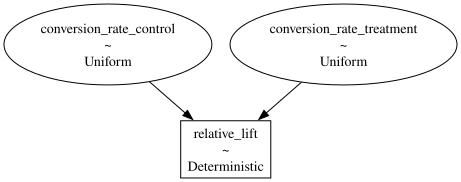
\[\begin{align*} \text{cr}_\text{c} & \sim \text{Beta}(1, 1) \\ \text{cr}_\text{t} & \sim \text{Beta}(1, 1) \\ \text{lift} & = \text{cr}_\text{t} / \text{cr}_\text{c} - 1 \end{align*}\]
Flat: \(\text{cr}_\text{c}, \text{cr}_\text{t} \sim \text{Beta}(1, 1)\)
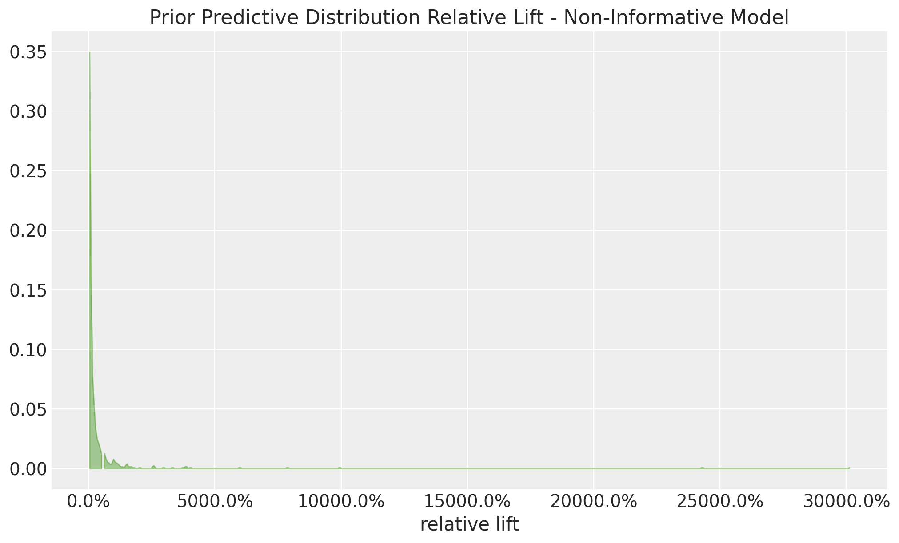
Informative: \(\text{cr}_\text{c}, \text{cr}_\text{t} \sim \text{Beta}(15, 600)\)
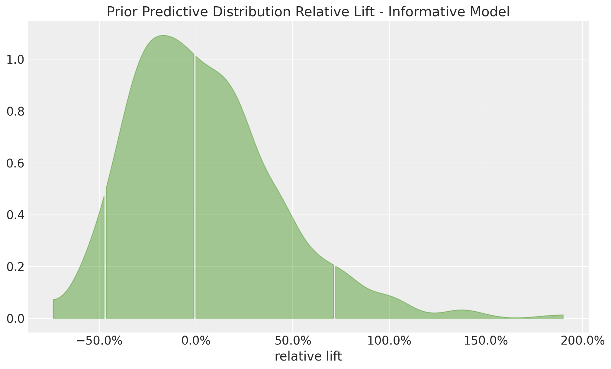
Independent priors give implausible lifts.
Most lifts are small, so we set the prior on the relative lift itself.
with pm.Model() as correlated_model:
conversion_rate_control = pm.Beta(
"conversion_rate_control", alpha=15, beta=600
)
relative_lift = pm.Normal(
"relative_lift", mu=0, sigma=0.1
)
conversion_rate_treatment = pm.Deterministic(
"conversion_rate_treatment",
conversion_rate_control * (1 + relative_lift),
)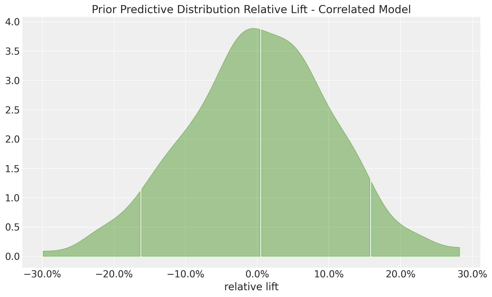
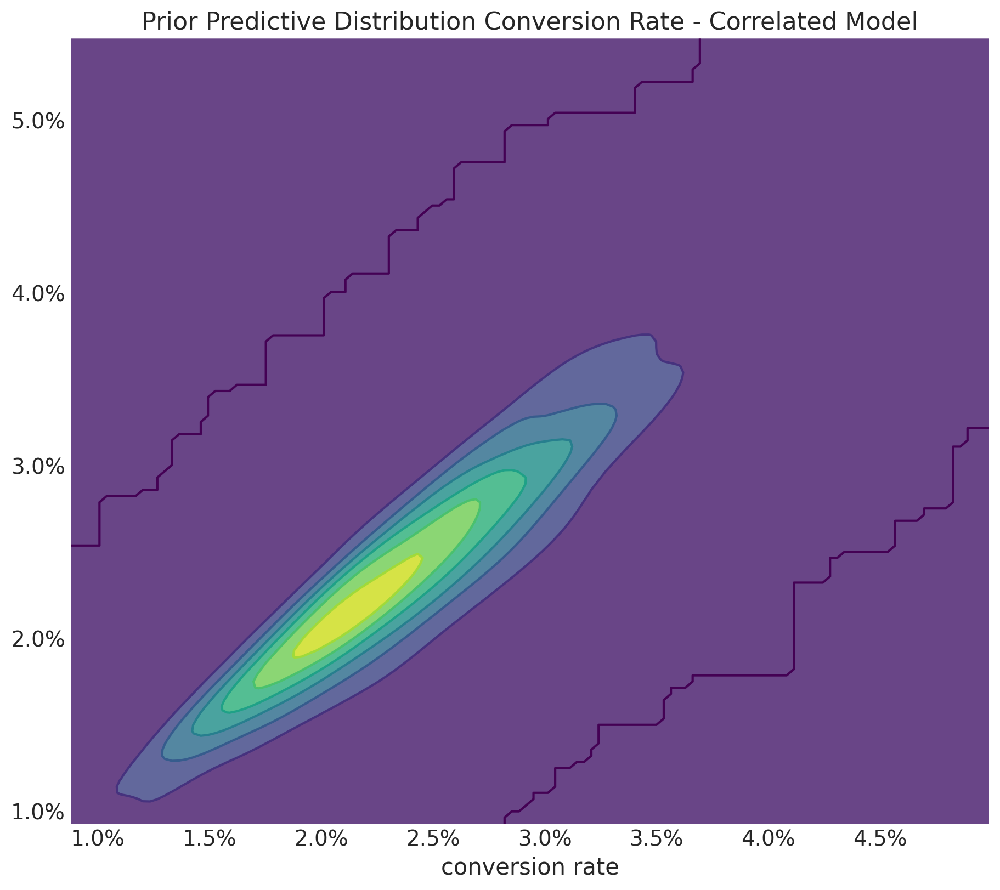
The joint prior of the two conversion rates concentrates on the diagonal.
We observe \(200\) and \(350\) conversions out of \(10{,}000\) users per group (naive lift \(75\%\)).
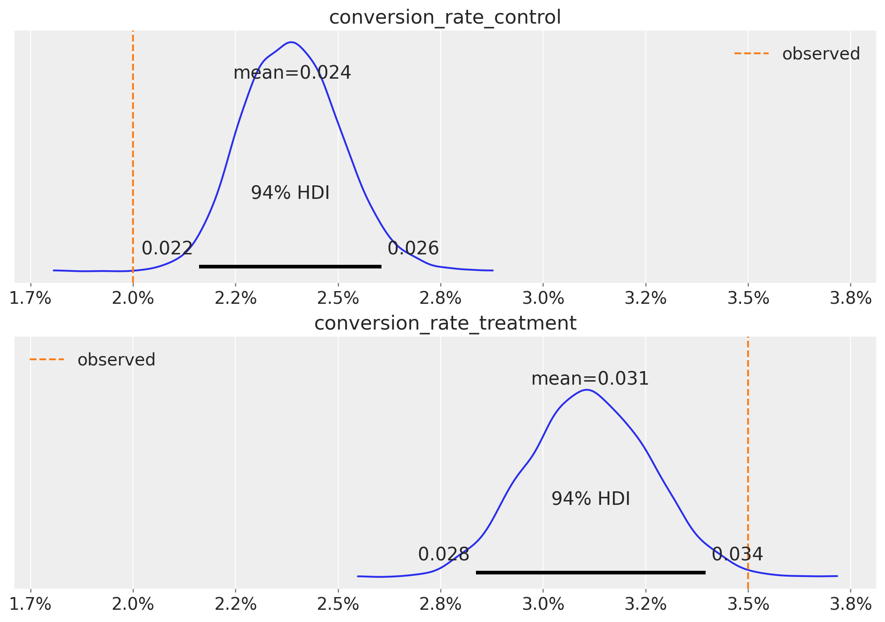
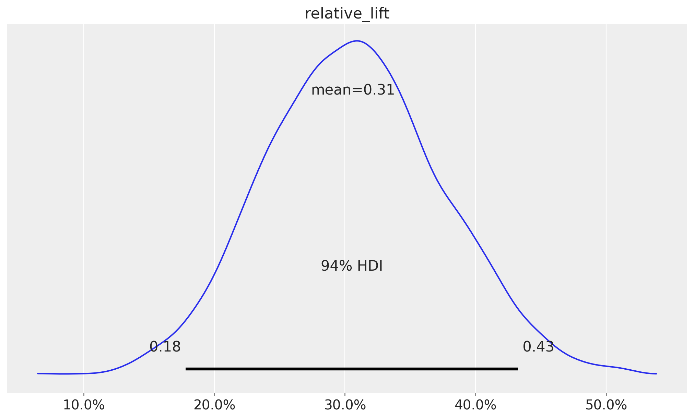
Without randomization, we must adjust for confounders. We use the LaLonde data from a job training program (National Supported Work Demonstration, 1970s) and ask whether job training increases earnings.
treat).re78, in thousands of USD).re75), race and ethnicity, marital status, degree.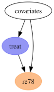
We assume that the covariates block every backdoor path (the backdoor criterion).
do OperatorWe have two ways to estimate the ATE:
We fit a linear regression and read the estimate of \(\beta_{\text{treat}}\) as the ATE:
\[ \text{earnings} = \beta_0 + \beta_{\text{treat}} \cdot \text{treat} + \beta_{\text{covariates}}^{\top} \text{covariates} + \varepsilon \]
We use the do operator:
\[ \text{ATE} = \text{E}[\text{earnings} \mid \text{do}(\text{treat} = 1)] - \text{E}[\text{earnings} \mid \text{do}(\text{treat} = 0)] \]
Pearl’s do Operator
We write both parts of the DAG as code:
treattreat + covariates \(\to\) earningswith pm.Model(coords=coords) as earnings_model:
covariates = pm.Data("covariates_data", covariates_obs, dims=("obs_idx", "covariate"))
# covariates -> treat
intercept_treat = pm.Normal("intercept_treat", mu=0, sigma=10)
beta_covariate_treat = pm.Normal("beta_covariate_treat", mu=0, sigma=1, dims="covariate")
treat = pm.Bernoulli(
"treat", logit_p=intercept_treat + covariates @ beta_covariate_treat, dims="obs_idx"
)
# treat and covariates -> earnings
intercept_earnings = pm.Normal("intercept_earnings", mu=0, sigma=10)
beta_treat_earnings = pm.Normal("beta_treat_earnings", mu=0, sigma=1)
beta_covariate_earnings = pm.Normal("beta_covariate_earnings", mu=0, sigma=1, dims="covariate")
sigma_earnings = pm.HalfNormal("sigma_earnings", sigma=10)
mu_earnings = pm.Deterministic(
"mu_earnings",
intercept_earnings + beta_treat_earnings * treat + covariates @ beta_covariate_earnings,
dims="obs_idx",
)
pm.Normal("earnings", mu=mu_earnings, sigma=sigma_earnings, dims="obs_idx")observe conditions the generative model on the data, so the same program now defines the likelihood. do sets treat to \(0\) or \(1\) for every unit and removes the arrows from the covariates into treat.
from pymc.model.transform.conditioning import do, observe
conditioned_model = observe(
earnings_model, {"treat": training_obs, "earnings": earnings_obs}
)
do_0_model = do(conditioned_model, {"treat": np.zeros(n_obs, dtype=np.int32)})
do_1_model = do(conditioned_model, {"treat": np.ones(n_obs, dtype=np.int32)})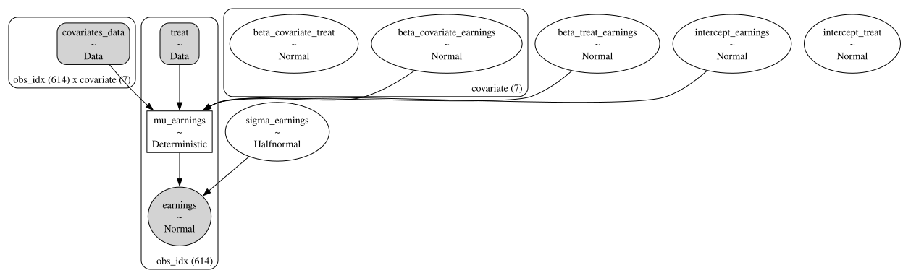
The coefficient and the do contrast agree: \(0.55\) thousand USD (\(94\%\) HDI \([-0.55, 1.7]\)), our ATE estimate under the backdoor assumption.
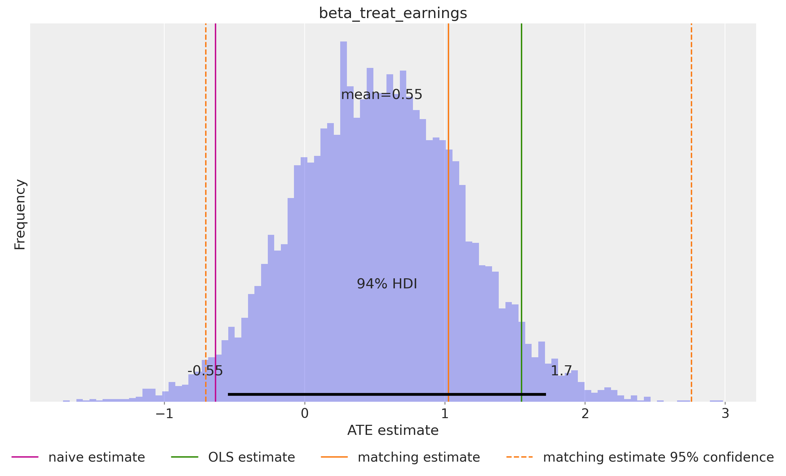
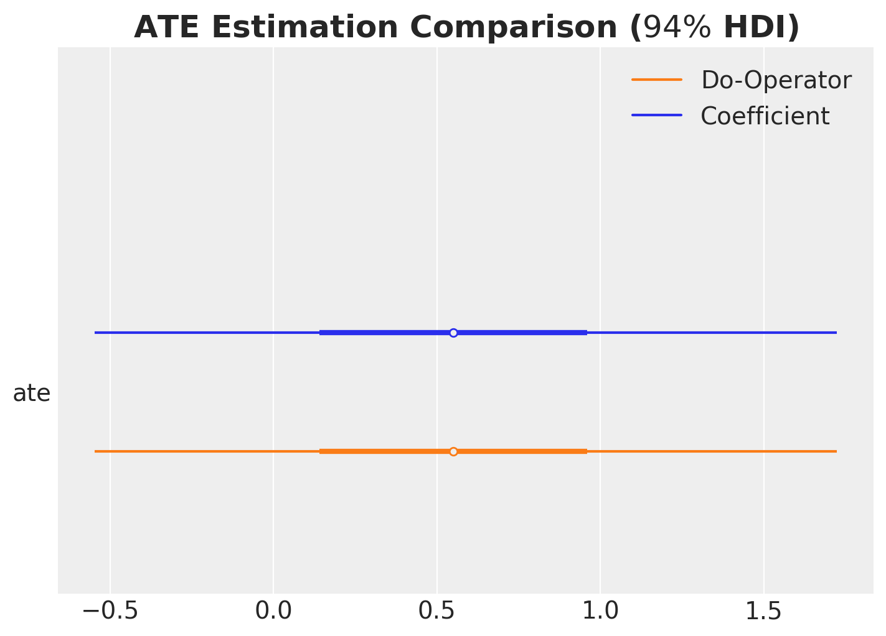
The randomized experiment gives \(1{,}794\) USD for the treated group (Dehejia and Wahba, 2002), outside our HDI. It is an effect on the treated, and our model leaves out 1974 earnings (re74). The OLS and matching lines (left) come from an external analysis with re74.
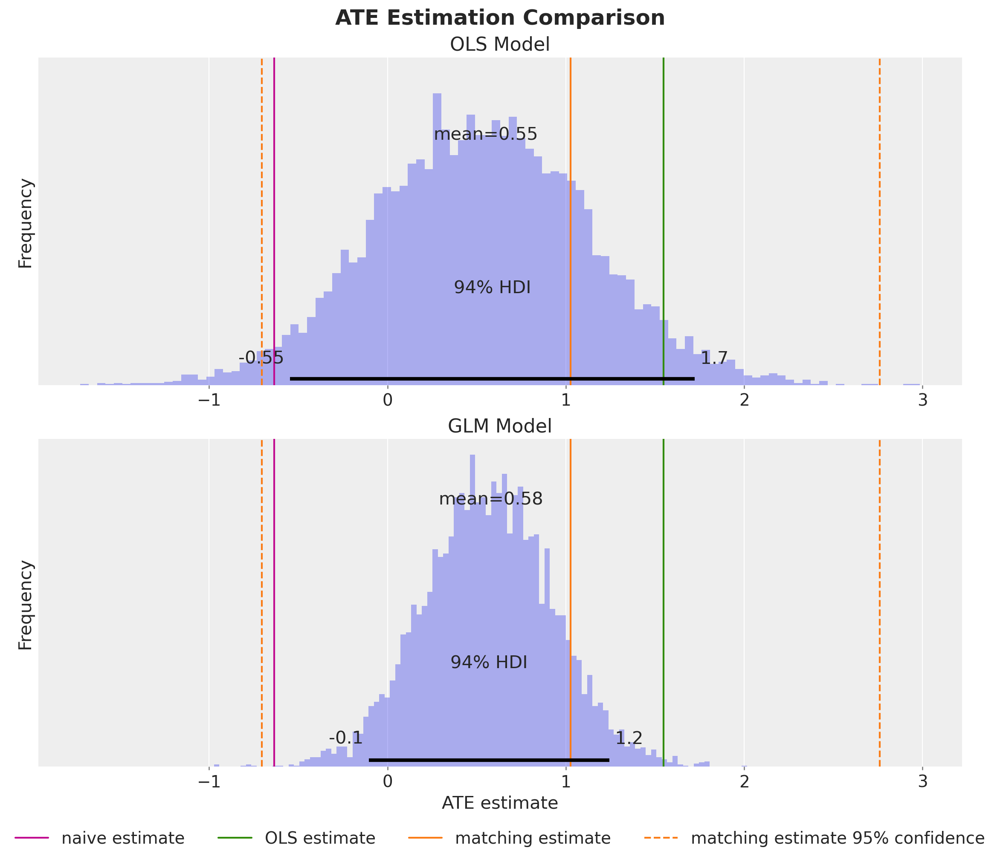
pm.Gamma replaces pm.Normal.do contrast still gives the ATE on the original scale: mean \(0.58\) with \(94\%\) HDI \([-0.1, 1.2]\).The same do code works with a non-linear link.
An unobserved group effect \(G\) drives \(X\) and \(Y\). The true effect of \(X\) on \(Y\) is zero.
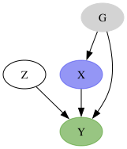
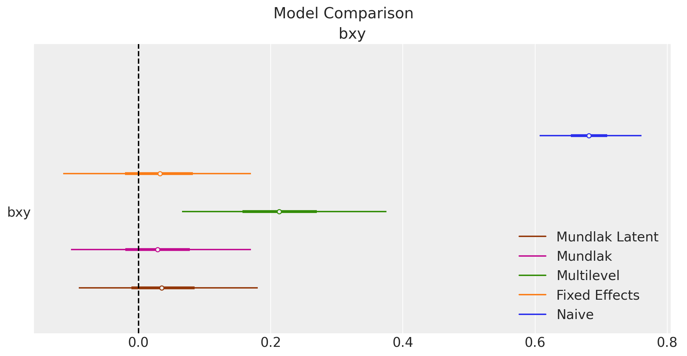
How should we split next quarter’s marketing budget across channels (TV, radio, search, and so on) to maximize sales?
In marketing, budgets are rarely randomized, so we estimate channel effects from observational time series.
A marketing mix model (MMM) is a regression of sales \(y_t\) on transformed media spend \(x_{m,t}\) and control variables \(z_{k,t}\) (trend, seasonality, holidays):
\[ y_t = \beta_0(t) + \sum_{m} \beta_m(t) f_m(x_{m,t}) + \sum_{k} \gamma_k z_{k,t} + \varepsilon_t \]
where \(f_m\) is the media transformation of channel \(m\) (next slide). The intercept \(\beta_0(t)\) and the channel coefficients \(\beta_m(t)\) can vary over time, for example with Gaussian processes.
The data are short (typically \(2\) to \(3\) years of weekly data), the media channels are correlated, and some confounders are unobserved. Bayesian MMMs add domain knowledge through priors, calibration with experiments, and posterior uncertainty for budget decisions.
The adstock transformation models carryover: the effect of an ad persists and decays over time.
\[ \text{adstock}(x_{m, t}; \alpha, L) = \frac{\sum_{j=0}^{L-1} \alpha^{j} x_{m, t-j}}{\sum_{j=0}^{L-1} \alpha^{j}} \]
for \(\alpha \in [0, 1]\) and \(L\) the maximum lag.
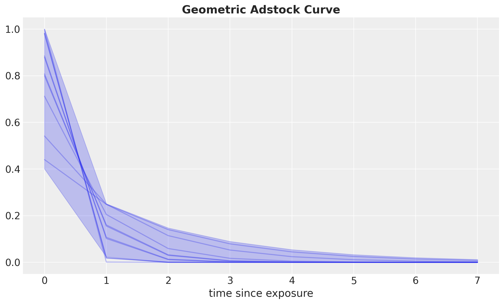
The saturation transformation models diminishing returns: each extra unit of spend has a smaller effect.
\[ \text{saturation}(x; \eta) = \frac{1 - \exp(-\eta x)}{1 + \exp(-\eta x)} \]
for \(\eta > 0\).
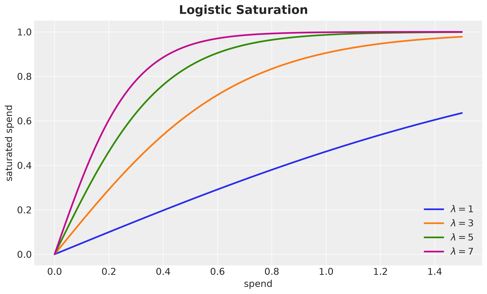
Adstock: Jin et al. (2017). Saturation: PyMC-Marketing LogisticSaturation.
An MMM splits sales into a baseline, seasonality, and channel contributions (right).
The return on ad spend (ROAS) of channel \(m\) compares the expected sales with and without the channel, per unit of spend. It is an ATE per unit of spend, for a continuous treatment that was not randomized.
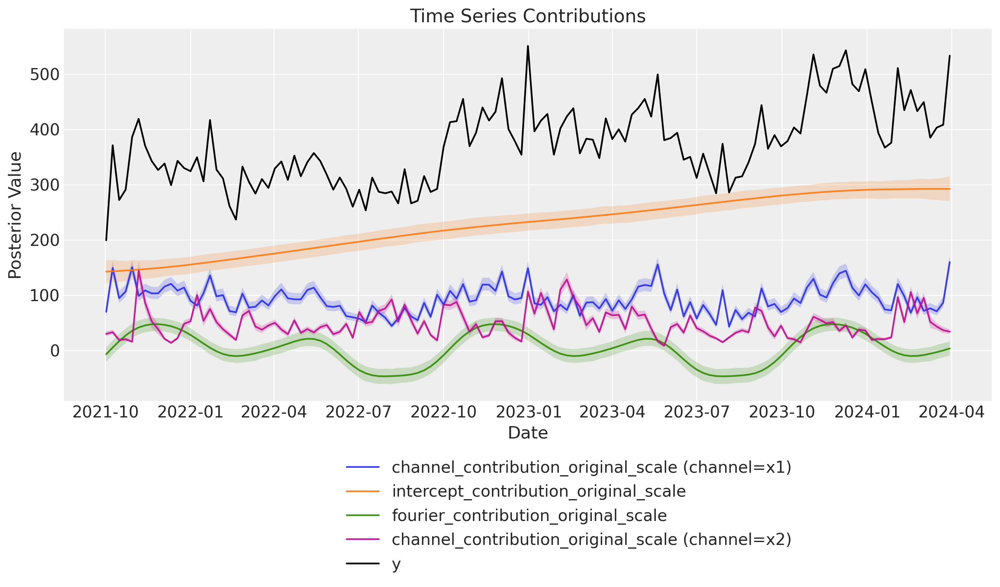
\[ \text{ROAS}_m = \frac{\sum_t \left(\text{E}[y_t \mid \text{do}(x_m = x_m^{\text{obs}})] - \text{E}[y_t \mid \text{do}(x_m = 0)]\right)}{\sum_t x_{m,t}} \]
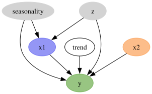
We simulate \(2.5\) years of weekly data with two channels, x1 and x2, and sales y.
z is a confounder: it drives the spend on x1 and the sales y.z, the backdoor path through z stays open.z. Model 2 leaves z out, as if we could not observe it.This is the job training example again, but we cannot adjust for z, and the data offer no proxies to model it as a latent variable.
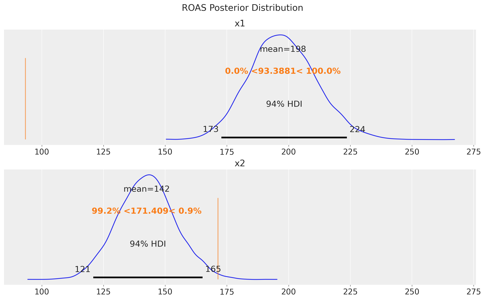
We bring experimental results into the model in one of two ways:
As in the A/B test, we put the prior on the quantity we know about: the ROAS.
We write each media coefficient as a function of the channel’s ROAS (simplified, with a constant \(\beta_m\)):
\[ \beta_m = \frac{\text{ROAS}_m \sum_{t} x_{m,t}}{\sum_{t} \left(f(x_{m,t}) - f(\tilde{x}_{m,t})\right)} \]
where \(f\) is the media transformation (adstock and saturation) and \(\tilde{x}_{m}\) is the spend with channel \(m\) turned off.
We can now put a prior on the ROAS of each channel, for example from a past experiment. Here we center the priors at \(95\) and \(170\), close to the truth (scaled data below).
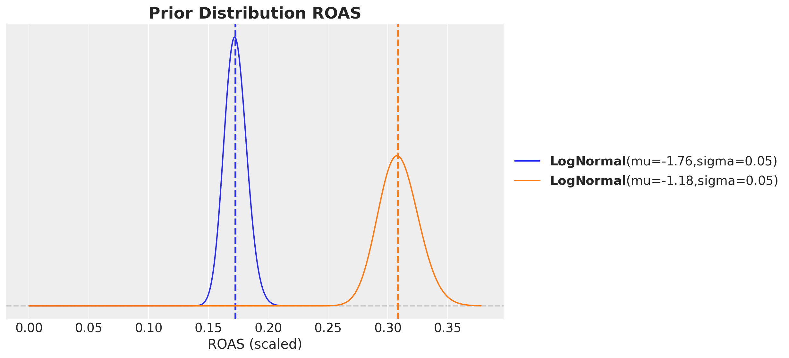
The frugal parameterization of Evans and Didelez (2024) follows a related idea: it makes the causal effect a parameter of the model, so we can put a prior on it directly.
We keep z out and put ROAS priors on both channels (Model 3 in the blog post).
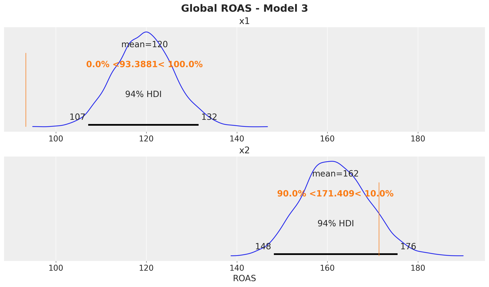
A lift test is an A/B test on one channel. We change the spend in some regions or time periods and measure the change in sales. Here the lift is an absolute change in sales, not a relative one.
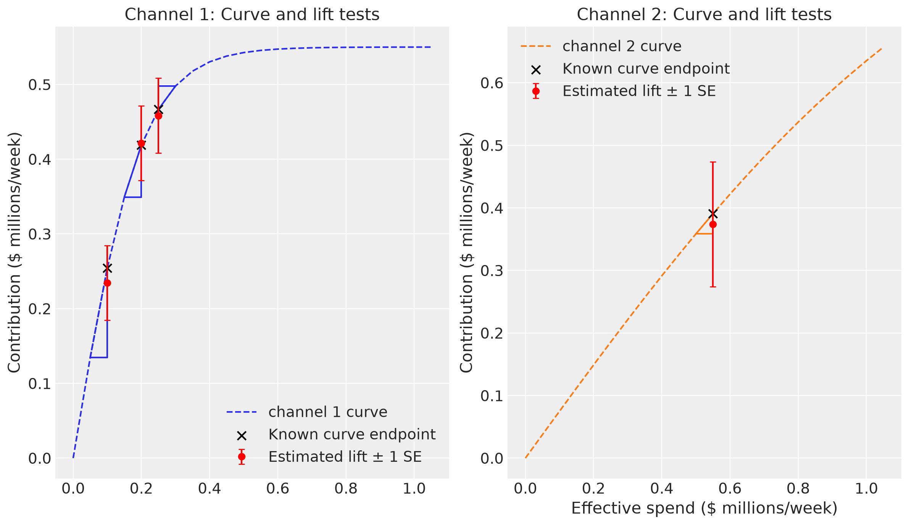
We keep z out of the model and add the lift tests as an additional likelihood.
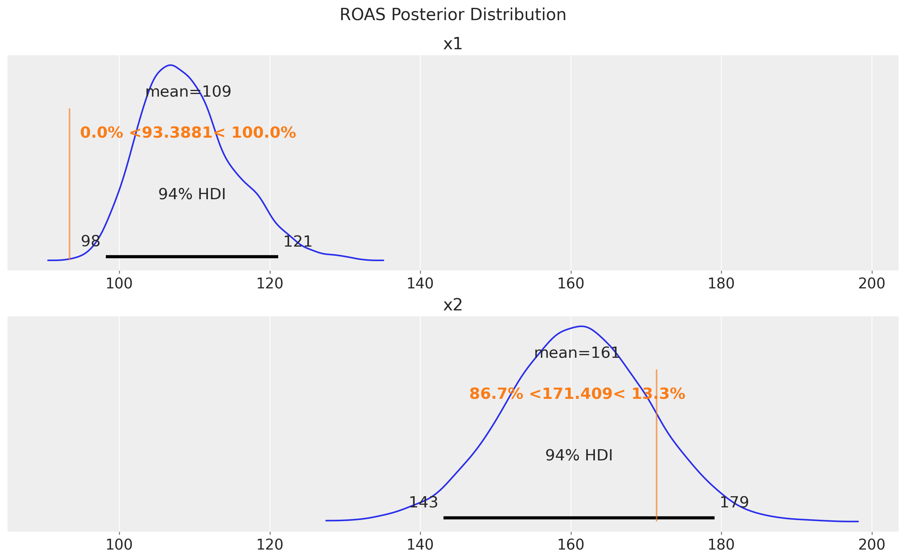
An omitted confounder biased the previous models. Funnels add a different risk: a mediator that we add as a regressor. We use the PyMC-Marketing MMM case study (\(209\) weeks of synthetic sales data).
TV, Radio, Newspaper.sem_spend.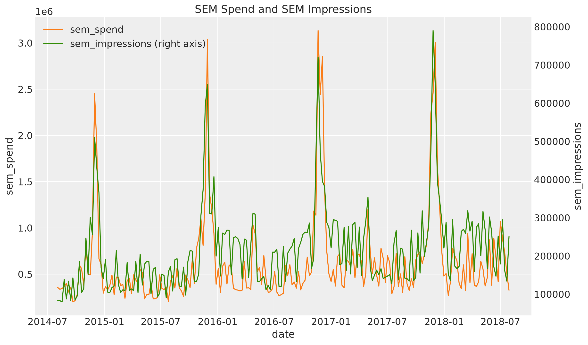
Two stories fit the data: paid search drives sales, or it harvests demand that the upper funnel created. Correlation cannot separate them.
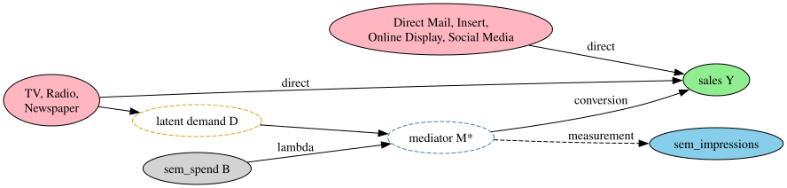
TV, Radio, and Newspaper act on sales directly and through latent demand \(D\).Let \(U_{t,c}\) be the spend of upper funnel channel \(c\) in week \(t\), \(B_t\) the paid search spend, \(I_t\) the search impressions, \(\mu_t\) the mean of sales, and \(\text{MMM}_t\) the direct terms of the other channels and the controls. The scales \(s_B\) and \(s_I\) are the maxima of \(B_t\) and \(I_t\), \(\sigma_I\) is the measurement noise, and \(uf\) and \(lf\) mark the upper and lower funnel:
\[ \begin{align*} D_t & = \text{baseline} + \sum_{c \in \text{upper}} \text{sat}^{uf}\left(\text{adstock}^{uf}(U_{t,c})\right) \\ M^{*}_t & = D_t + \lambda \, \frac{B_t}{s_{B}} \\ I_t & \sim \text{TruncatedNormal}\left(s_{I} \, M^{*}_t, \sigma_{I}, \text{lower}=0\right) \\ \mu_t & = \text{MMM}_t + \text{sat}^{lf}\left(\text{adstock}^{lf}(M^{*}_t)\right) \end{align*} \]
This is a structural equation model with a latent variable. The impressions equation is the measurement model, and we fix its loading at one to set the scale of \(M^*_t\).
TV, Radio, and Newspaper add, with a lag and diminishing returns.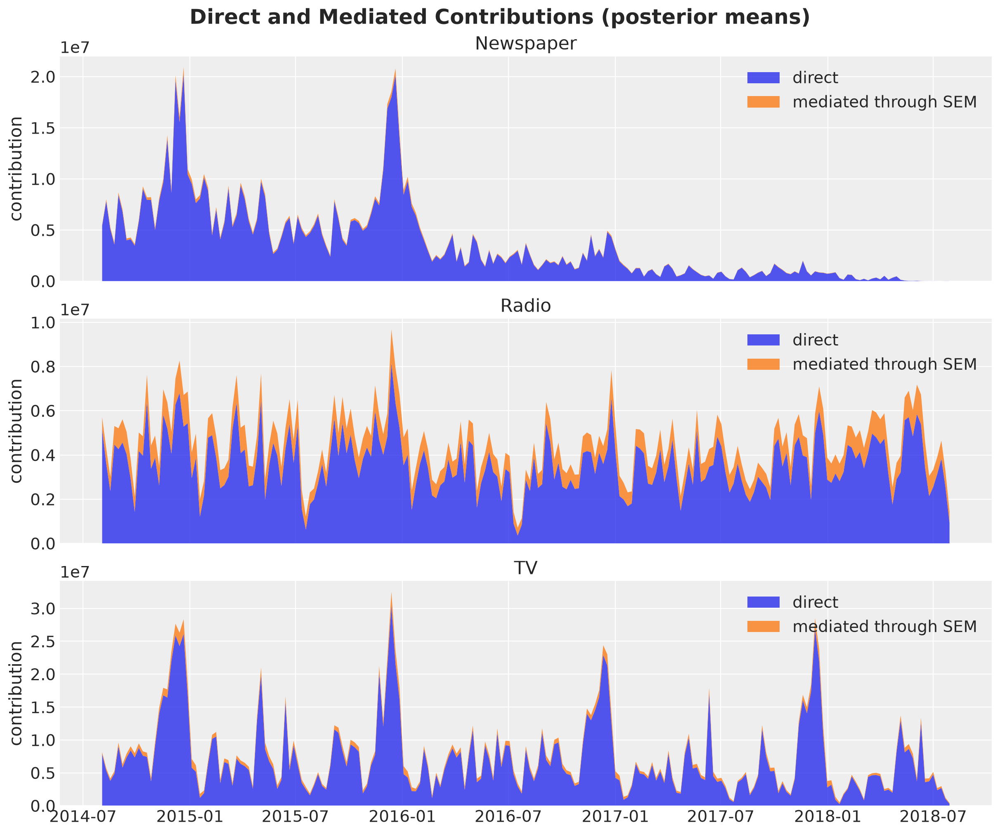
Newspaper), \(12\%\) (TV), and \(25\%\) (Radio). The lower ends of the \(94\%\) HDIs reach zero.Let \(b_m\) be the weekly spend of channel \(m\) that we hold over the planning window, \(B\) the total weekly budget, \([l_m, u_m]\) the guardrails of channel \(m\), and \(R(b; \theta)\) the sales response over the window for the plan \(b\) and the model parameters \(\theta\). We solve
\[ \max_{b} \; \text{E}\left[R(b; \theta) \mid y\right] \quad \text{subject to} \quad \sum_{m} b_m = B, \quad l_m \le b_m \le u_m \]
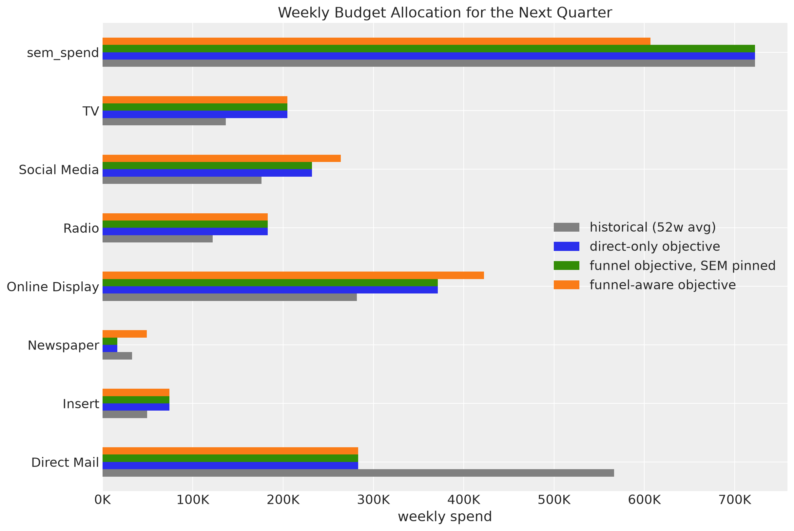
sem_spend) and guardrails of \(\pm 50\%\). The direct-only objective cannot see the path through \(M^*\), so it keeps paid search at its historical level.In this model, the useful role of the funnel is that it tells us how much to spend on SEM, not that it changes the order of the other media channels.
do query works across models. It applies to regressions, GLMs, MMMs, and funnel models.